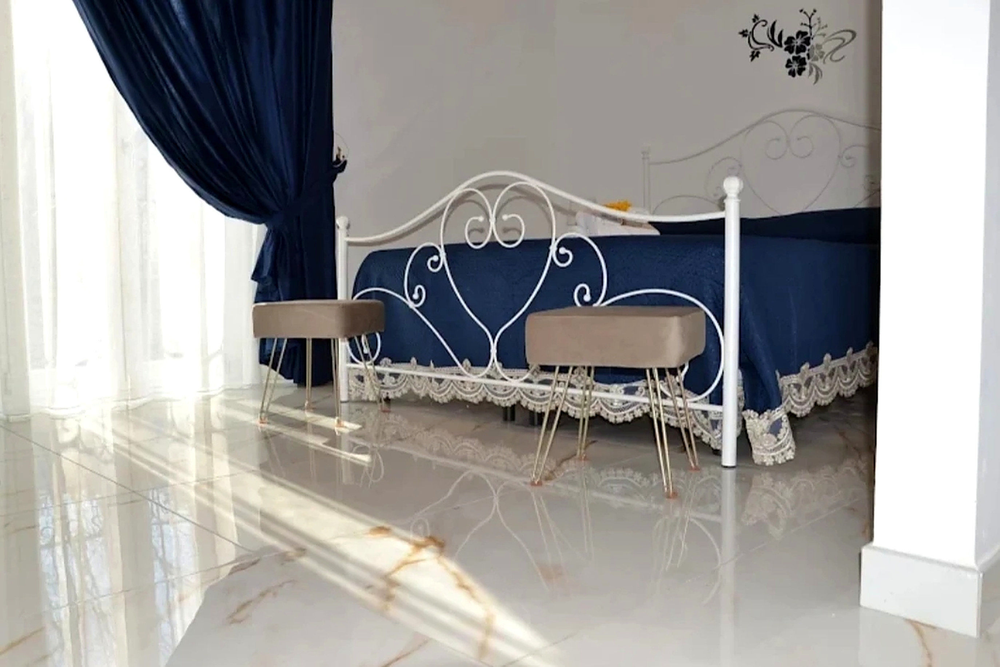
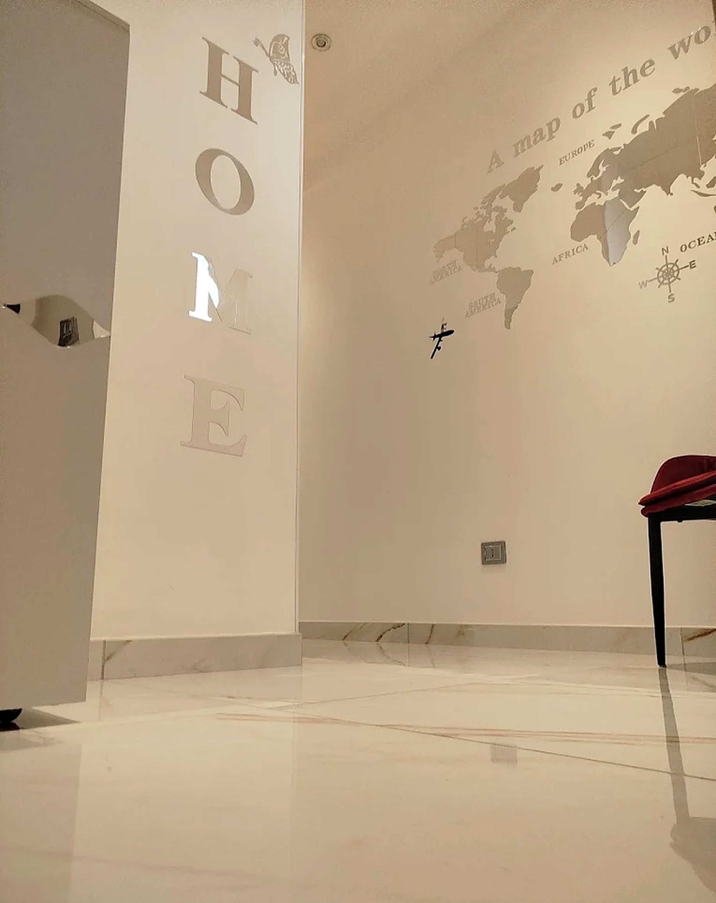
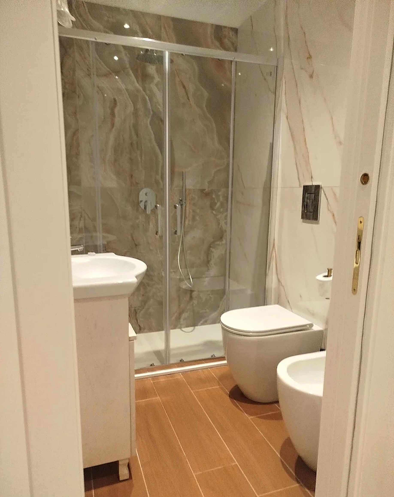
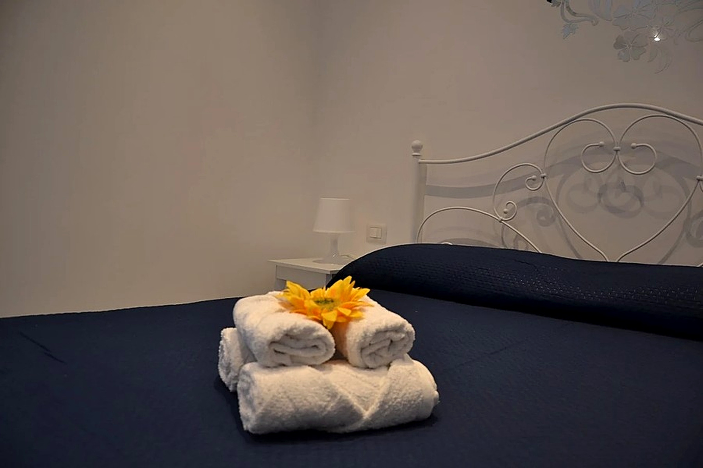
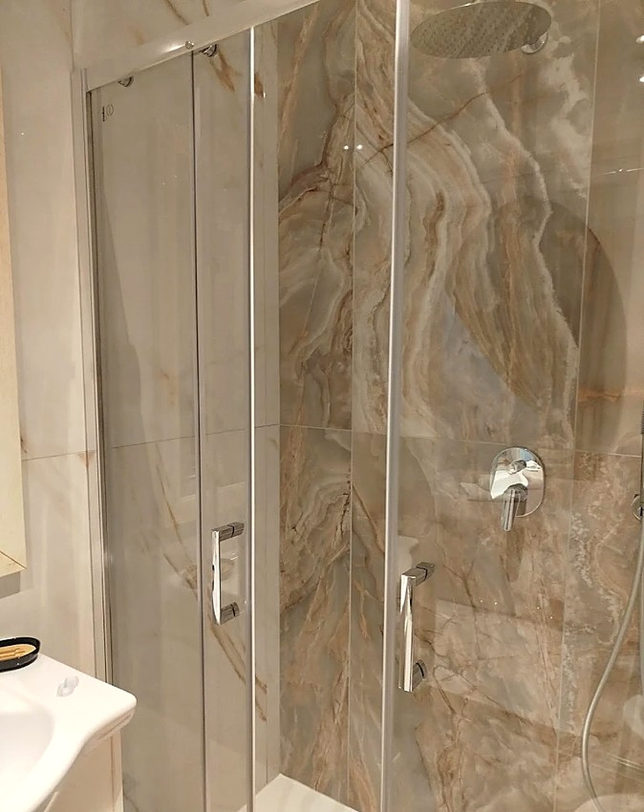

Fino a 4 ospiti
Appartamento Amalfi
Spazioso e luminoso: camera matrimoniale con letto in ferro battuto, cucina bianca con piano in marmo e zona pranzo. Pensato per famiglie o piccoli gruppi.
Scopri l'appartamento Amalfi →
Casa vacanze · Cava de' Tirreni · Costiera Amalfitana
Domus Costa è il punto di partenza perfetto: una casa curata, accogliente e rinnovata nel cuore di Cava de' Tirreni, a pochissimi chilometri dalle perle del Mediterraneo. Vivi la magia di Positano, Amalfi, Ravello e Cetara — poi torna a casa.
La Domus
Appena rinnovata, arredata con gusto e pensata per farti sentire subito a casa: pavimenti in marmo, tende leggere come vele, dettagli che profumano di accoglienza. Domus Costa non è un alloggio anonimo — è il tuo buen ritiro tra il borgo dei portici e la luce della Costiera.
Ti accogliamo come amici di sempre: check-in rapido, consigli sinceri e un'ospitalità che i nostri ospiti definiscono, semplicemente, di famiglia.



Gli Appartamenti
Amalfi e Positano sono due appartamenti indipendenti nello stesso edificio di Via XXV Luglio: stessa cura, stessa accoglienza, due misure diverse per due modi di vivere la vacanza.
Spazioso e luminoso: camera matrimoniale con letto in ferro battuto, cucina bianca con piano in marmo e zona pranzo. Pensato per famiglie o piccoli gruppi.
Scopri l'appartamento Amalfi →
Intimo e raffinato: bagno in marmo onice, living con parete a tema "Home" e camera con tende dorate. Ideale per coppie in cerca di quiete.
Scopri l'appartamento Positano →Domus Costa · l'atmosfera
Marmo chiaro, tende leggere e dettagli scelti senza fretta: un luogo da vivere con un ritmo diverso.
Esplora gli spaziServizi
Comfort moderni in una casa dal cuore antico. Servizi votati 10/10 dagli ospiti.
Galleria





Il Territorio

L'Abbazia benedettina della Santissima Trinità, cuore spirituale della città: chiostro, museo e una storia che affonda le radici nell'anno Mille.

Gli scavi dell'antica città romana, patrimonio UNESCO: una delle mete più affascinanti della Campania, a pochi passi da Cava.
Spiaggia attrezzata con stabilimento balneare, ombrelloni e servizio bar: la scelta comoda per una giornata di mare senza pensieri.
Sentieri che regalano viste dal golfo di Salerno a quello di Napoli, tra la Valle dell'Orco e i borghi della Costiera.

Il Duomo, la scalinata, i limoni: la Repubblica Marinara del mito.
La verticale di case rosa sul mare: tramonti da cartolina.
Maneggi nell'entroterra per escursioni a cavallo tra uliveti, boschi e la macchia mediterranea.
Offerte
Scrivici su WhatsApp o dal modulo quanti siete e come immagini la vacanza: il periodo è facoltativo, se lo sai già puoi indicarlo nel calendario. Rispondiamo sempre, e in fretta.
Costruiamo una proposta secondo specifici profili — coppia, famiglia, smart worker, lungo soggiorno — con pacchetti personalizzati dal 2 giugno al 30 settembre.
Conferma senza piattaforme intermediarie: contatto diretto, trasparenza totale e prezzi esclusivi riservati a chi prenota con noi.
«Prezzi esclusivi per un soggiorno unico, come te.»
Le tariffe variano con le stagioni e con i profili di viaggio: per questo non le troverai scritte qui. Il preventivo che ricevi è cucito addosso al tuo soggiorno — e resta quello che paghi.
Domande
Non trovi la risposta? Scrivici su WhatsApp o chiamaci: rispondiamo sempre, e in fretta.
Tutte le domande →I prezzi non sono pubblicati: inviaci il periodo d’interesse su WhatsApp o con il modulo e riceverai un’offerta personalizzata secondo specifici profili, con prezzi esclusivi per chi prenota a contatto diretto.
Check-in dalle 15:00 alle 20:00 (orari diversi concordabili, con self check-in assistito) e check-out entro le 10:00. Ti chiediamo di comunicare l’orario di arrivo previsto prima della consegna delle chiavi.
Sì: gli ospiti di Domus Costa parcheggiano gratuitamente nelle aree a pochi passi da casa. Un vantaggio raro nel centro di Cava de’ Tirreni.
Cancellazione gratuita fino a 14 giorni prima dell’arrivo; tra 14 e 7 giorni è trattenuto il 50% dell’acconto; oltre tale termine l’acconto non è rimborsabile. In caso di forza maggiore valutiamo insieme la riprogrammazione del soggiorno.
Prenota
Raccontaci le date, gli ospiti e i desideri: entro 24 ore ricevi un'offerta cucita addosso al tuo soggiorno — senza piattaforme, senza sorprese.